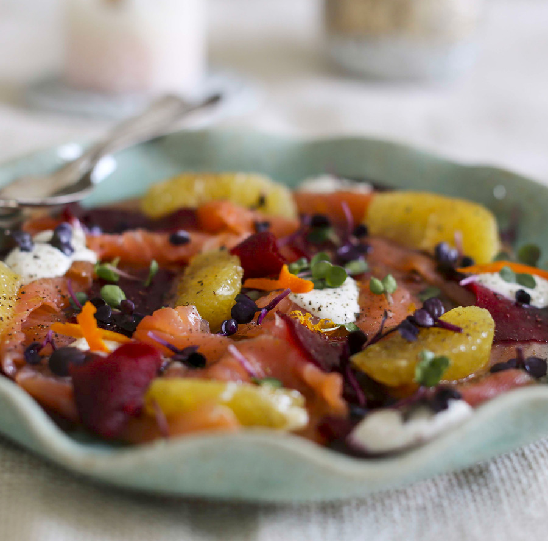

Довольно простой рецепт; важно подобрать качественную рыбу. Конечно, рыбы может быть больше, чем указано в рецепте. Решать вам. В этом рецепте очень важна красивая подача. Если вы любите сырую рыбу, попробуйте с ней. А можно смешать две текстуры и использовать и копченую, и сырую маринованную рыбу.
Если просто выложить все поверх рыбы, получится вкусная кучка. Советую представить, что ваш карпаччо — это цветок, а рыба, свекла и дольки апельсина — его лепестки. Не нужно выкладывать свеклу и апельсины плоско поверх рыбы, постарайтесь подложить их под нее, но так, чтобы они были хорошо видны. Сложно красиво выложить сметану, именно поэтому пригодится цедра и мелкая зелень. А также свежемолотый перец. Такие нюансы делают подобные маловыразительные продукты без формы красивыми. Выложите чайной ложкой «кнедлики» в разных местах, посыпьте каждый перцем, цедрой и выложите сверху пару зеленых листиков. Вместо проростков в этом рецепте можно использовать листики мяты, стараясь выбирать наиболее мелкие.
Сырую рыбу нужно тонко нарезать и замариновать (буквально 5 минут). Для этого смешать: